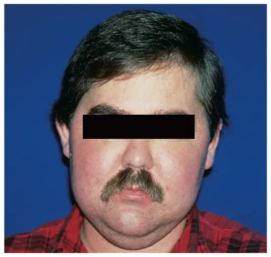

نسخه استخراجشده؛ ترجمه یا تأیید علمی انجام نشده است. وضعیت: captured
خانم ۴۵ سالهای با آرتریت روماتوئید سه سال است هر روز صبح ۷٫۵ میلیگرم پردنیزولون میخورد و برای کشیدن دو مولر آمده. میپرسد: «پیش از جراحی باید قرص بیشتری بخورم؟» چه جوابی میدهی؟

کورتیکواستروئید خوراکی طولانیمدت با بازخورد منفی، ترشح CRH از هیپوتالاموس و ACTH از هیپوفیز را کم میکند و آدرنال کمکار میشود. این همان نارسایی ثانویهی ناشی از کورتیکواستروئید است. حدود ۲٪ بزرگسالان کورتیکواستروئید طولانیمدت مصرف میکنند.
پس از قطع دارو، پاسخ آدرنال به استرس معمولاً ظرف حدود ۱۴ روز برمیگردد، حتی پس از یک ماه دوز بالا. برای مقایسه: ۵ میلیگرم پردنیزولون یا ۰٫۷۵ میلیگرم دگزامتازون تقریباً هماثر ۲۰ میلیگرم هیدروکورتیزون است، یعنی تولید روزانهی بدن.
سالها قاعده این بود که هر بیمار کورتیکواستروئیدخور پیش از جراحی دوز اضافه بگیرد. شواهد تازه این را عوض کرده است: بیشتر بیماران با دوز روزانه یا یکروزدرمیان، حتی در جراحی، کورتیزول کافی دارند.
در این موارد پیش از جراحی با پزشکش مشورت کن.
عوارض مصرف طولانی: صورت گرد (moon face)، کوهان پشت گردن، فشار خون بالا، دیابت، دیر ترمیم شدن زخم، پوکی استخوان و زخم پپتیک. فشار و قند را پیش از جراحی بسنج، ترمیم زخم را پیگیری کن و برای درد پس از عمل بهجای آسپرین و NSAID، استامینوفن بده.